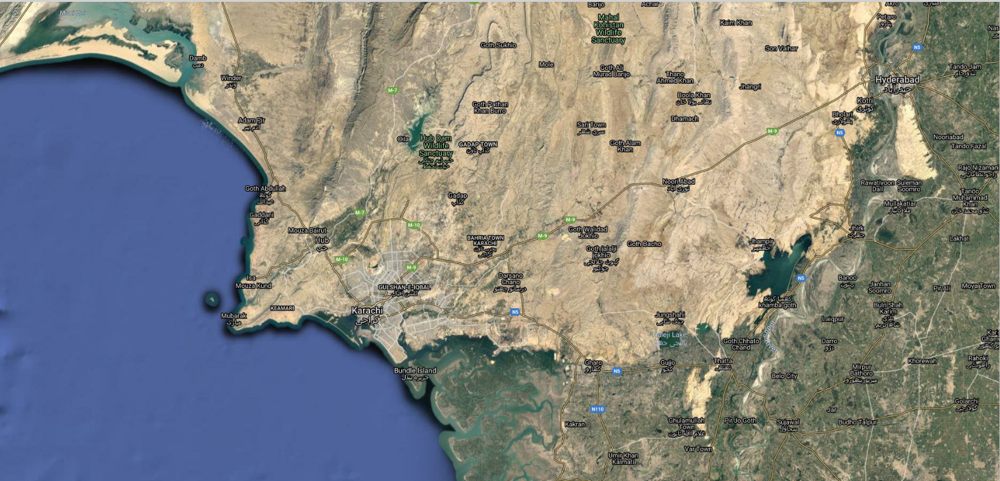
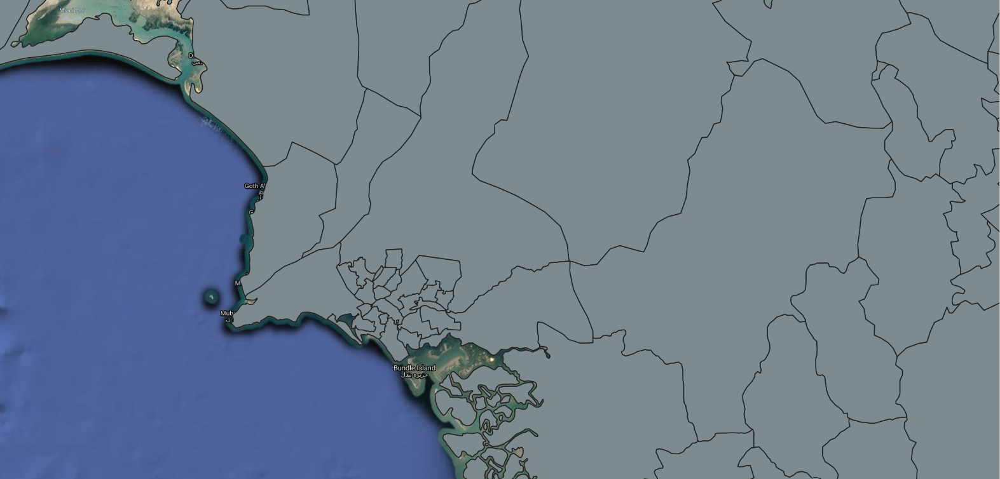
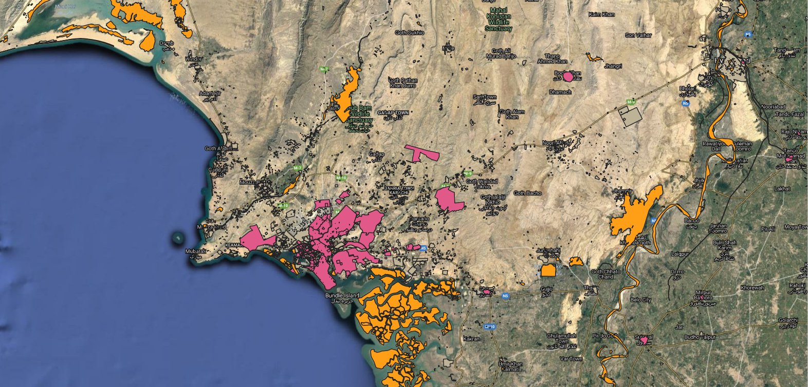
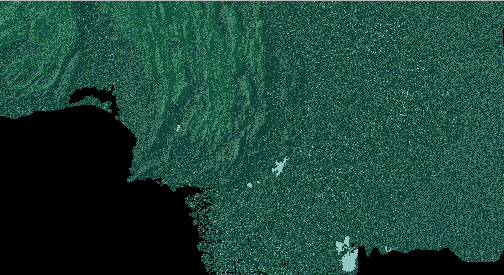
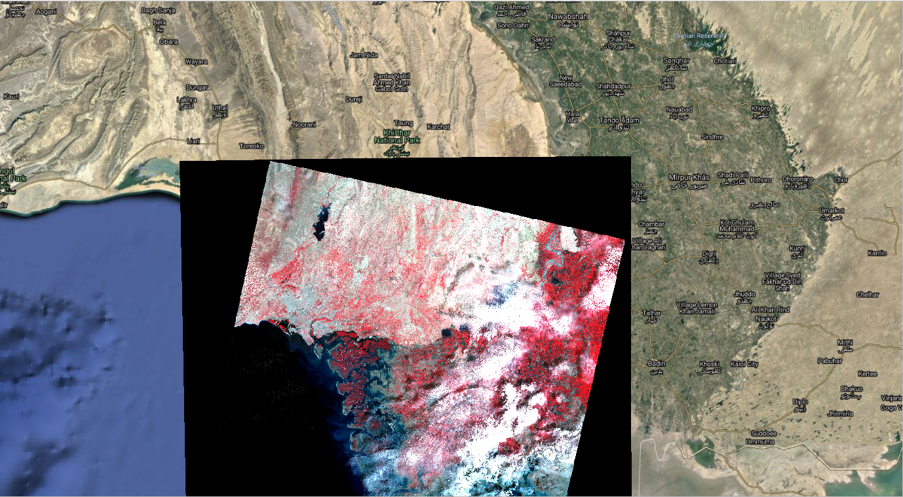

Contact Us
Do you want to give feedback or suggestions? Or contribute data for the Project? Maybe you want to support our cause and give us funds? Contact us through the following domains!
Urban Management and Efficient Ecological Database
An initiative to provide data for better, sustainable and resilient cities in the future
Project UMEED is an initiative to gather important and relevant Urban Planning geospatial data from public access resources of various organizations such as NASA, sort it in hierarchical format and display it in a free-to-access public web application for the common public and relevant experts, in order to provide a clear picture of how to make cities resilient, sustainable and environmental friendly in the future, informing the SDG's for 2030
We aim to provide general and urban geospatial data for various cities all over the world to the common public and field experts for free. Currently, the country Pakistan is supported including all its cities. We plan to expand our project to other countries in the near future.
Using the already available geospatial data from online public access portals, we have used state-of-the-art Machine Learning AI Algorithms to determine and predict future urban possibilities, with the parameters of vegetation, pollution and disaster included. The predicted output can help to expand and build cities free from such Environmental hazards.
Our data is free to view for everyone, anytime, anywhere. Source files are also available for download in various Geographical and Geospatial formats, as this is an Open Source Project
Our Team consists of people from various fields and backgrounds, contributing their skills for a good cause.
Carlos is a Mapping and GIS Expert from Mexicali, Baja California, Mexico. He manages all mapping and GIS Work of this project as a part-time worker.
Mohammed Bin Faisal is the Project Head from Karachi, Pakistan and also the webapp and website developer of this project.
Hampray Pasano is from Phillipines, and the Project Manager. All paperwork, documents and social relations are his responsibility.
Our Basemap, Google Hybrid Imagery, is a collection of various satellite data combined with labels and borders. It is useful for getting a basic visualization of the map and all other layers are based on this primary layer.

Administrative Boundaries is a group of various layers that include National Boundary, National Constituencies, Provincial Boundaries and Constituencies, District Boundaries and other sub-boundaries that are country-specific.

The SDG Layers include all the output and important layers for which the project is intended to solve. It includes various modified, original and source data from NASA, and informs all the sub-goals of SDG 11 and SDG 3, SDG and SDG 7. The data includes:

The Terrain Raster Dataset is a group of layers that includes the Relief and Topographic Features along with the National Drainage Concentration and/or Watershed Basins, as a reference data.

The Landsat Infrared Imagery is extracted from NASA Earthdata and helps to identify trees and clouds over a specific area, for reference purposes.

Do you want to give feedback or suggestions? Or contribute data for the Project? Maybe you want to support our cause and give us funds? Contact us through the following domains!